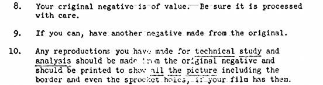

Why Our First Alien Encounter Could Happen Soon
Simon Worrall , National Geographic
11 / 20 / 2016
It's one of the great questions of our age: Are we alone in the universe? A long line of films-from Contact to Close Encounters of the Third Kind to the latest entry, Arrival-have explored whether intelligent life is somewhere out there in the cosmos and wondered what would happen if, or when, we finally come face-to-face with it.
Now, to get the scientific perspective on extraterrestrials, National Geographic has turned to a comedian, albeit one who pursued a Ph.D. in physics. The host of the British TV show It's Not Rocket Science, Ben Miller has recently published a book called The Aliens Are Coming! The Extraordinary Science Behind Our Search for Life in the Universe.
Speaking from his home in Gloucestershire, England, Miller explains why the TESS project could finally tell us if there is life elsewhere in the universe, how comedy and science connect, and why we will need a new Rosetta Stone to interpret alien messages.
Worrall: You write in your book that we are living through one of the most extraordinary revolutions in the history of science-the growing belief that we are not alone.
Miller: When I was studying at university, we weren’t even sure if there were planets around other stars or whether the solar system might be a one-off. But for the last few decades we have been on this extraordinary voyage where we’ve found thousands of planets around other stars. Strangely, we started looking for planets a long way out because of the technology we had at the time. Now we are starting to look at the stars closest to our own.
Recently, there was an exciting discovery that the very nearest star to us, a red dwarf, has got a planet called Proxima b. Not only that, but the planet is the right distance from that star to have liquid water on its surface. We think liquid water is very important for life. So, right on our doorstep, the conditions might be right for life.
Worrall: A lot of the new thinking about the possibility of alien life-forms comes not from space but from deep in the ocean. Tell us about extremophiles.
Miller: This is an incredible story. Since the early 1960s we’ve been finding these living things, often single cells, in conditions we thought impossible for life to survive. One of the first places they were found was in Yellowstone Park, in hot springs of up to 90 degrees Celsius. That’s altered our thinking on alien life-forms. We have found bacterial life on the inside of nuclear power stations, in the upper atmosphere, and in rocks deep within the Earth. That means there's more real estate for life out in the galaxy.
It also means we have to rethink where we fit in the spectrum of life. We now believe life on Earth started in hot, volcanic springs at the bottom of the ocean. What I love about that is that it makes you rethink the whole idea of what an extremophile is. When you think about it, we're the extremophiles, sitting here having a conversation, breathing in oxygen, at absurdly low temperatures compared to how life first stared out. And we're not even in water! We are an extraordinary, hyper-organized colony of bacteria that started its evolutionary journey in scalding hot, alkaline water in the bottom of some primordial ocean. In other words, one of your ancestors is a rock! [Laughs]
Worrall: Comedy and space are not words that are usually linked. You have to tell us your favorite space joke.
Miller: How many ears has Capt. Kirk got? The answer is three: the left ear, the right ear, and the final front ear. [Laughs] Actually, the link between comedy and space is pretty strong. Science is a skeptical pursuit, and so is comedy. There’s a fantastic tradition of combining science and comedy, from Douglas Adams to Monty Python. Think of Eric Idle’s songs about the universe and evolution. On my TV show, we have always done sketches on global warming. A man's looking out the window, it's raining, and he says to his wife, “Look at that! It's dripping out there. So much for global warming, eh?" [Laughs]
Worrall: Stephen Hawking believes we should not attempt to contact alien civilizations. What's his thinking? And do you agree?
Miller: His position is a little harder to interpret than that. He's a great supporter of the Breakthrough Listen project, this idea that we should put proper funding into searching the nearest million stars to see if there are signs of life. His point, generally speaking, is that when two civilizations come into contact, the civilization that's not so technologically advanced doesn’t come off too well. His example is that it didn't work out too well for North American Indians when they met Western settlers. I don't agree [with his position on contacting alien civilizations]. I can't say there’s not a risk. But what we stand to gain far outweighs the risk.
Worrall: If we receive a message from outer space, we may not be able to understand it. How can Egyptian hieroglyphics help us with that conundrum?
Miller: We owe the deciphering of the hieroglyphs to Napoleon, who decided to annex Egypt and took with him some of the brightest philosophers and scientists of the age. But the hieroglyphs were an incredibly difficult thing to crack. What did a picture of a bee mean? Did that mean a bee, or the concept of being stung, or did it stand for a phonetic sound?
The breakthrough came when Napoleonic troops were dismantling an old fort at the port of Rosetta and found this stone with three different inscriptions. One was in hieroglyphs, another in ancient Greek, and the other in an intermediate form of Egyptian writing. It became known as the Rosetta Stone and was one of the ways we managed to crack Egyptian hieroglyphs.
We won't have a Rosetta Stone when we receive our alien message, so it will be a very hard thing to translate. People have come up with clever ideas about how you might create a Rosetta Stone, how you might compose a message to send to an alien which contained something within it the aliens would also have within their culture, like mathematics or the ratio of the electron to the proton.
One thing we've learned is that the more information and language you have, the more chance you have of decoding it. The problem with sending just a short message, such as those attached to the Pioneer and Voyager spacecraft, is that there’s very little information in them. That's why some experts, like Seth Shostak, the head of SETI, have come up with the idea of sending the Internet. The Internet is the most honest reflection of who we are as a species. Cats licking lollipops, a hundred recipes for American pancakes, the whole thing! [Laughs] We are not these superintelligent beings we've tried to present ourselves as in previous messages.
Worrall: In 2017, NASA will launch the Transiting Exoplanet Survey Satellite (TESS). What is it-and what's its mission?
Miller: We're finally looking at the planets nearest to us. To begin with, we weren't really sure any stars had planets. So we put up the Kepler space telescope and focused it on a very dense portion of the star field in a region of our own galaxy a long way away. The amazing thing about Kepler was that it found most of the stars have planets!
TESS, which will launch in 2017, will be looking at the very nearest stars. It may even be possible to look at the light coming from the atmosphere of those stars and tell what gases are in those atmospheres. When you look at Earth and see all this oxygen, you'd think there’s something strange going on. Oxygen is an incredibly reactive gas. What's that doing in mass quantities in an atmosphere? It will be those kinds of signals that we'll look for when we look at the atmospheres of other planets.
Worrall: You know what the last question has to be: Are the aliens really coming?
Miller: Within the next ten years we’ll know whether the nearest Earth-like planets to us have got life on them. That has enormous implications for us as a species. Once we find life out there, you have to think that other intelligent life-forms and civilizations exist as well.
At the moment we are in this extraordinary position that our planet may be the only thing in the entire universe with life. So we would be taking a closer step to one of two extraordinary results: that we are the only life-form in the universe or that we are not alone. Either will be species defining. It will change the whole way we view ourselves: religion, politics, our individual psyches, everything.
One of these two possibilities has to be true. It's just us—or we are not alone.
The CIA’s Guide to Taking Pictures of UFOs
Jordan Pearson , Motherboard
01 / 26 / 2016
It's a stellar time to be someone who knows that the truth is out there, and to trust absolutely no one.
Around this time last year, amateur Freedom of Information Act enthusiast John Greenewald, Jr. uploaded 130,000 pages of formerly classified documentation on the US Air Force's UFO investigations between 1947 and 1969. On Sunday, the CIA itself followed suit—sorta—by highlighting a handful of documents related to its own UFO projects, mostly in the 40s and 50s. Why? Apparently even the feds are stoked on the new season of The X-Files, which premiered on Monday.
There are tons of curiosities in the CIA's collection of UFO documents , including some referring to the persistent efforts of famous UFO truthers, including Major Donald Keyhoe and chemical engineer Leon Davidson, to declassify CIA documents on UFOs in the 1950s. Also buried in the pile are instructions for how to take a photo of a UFO for analysis.
This means setting your camera so that you can pull in as much detail as possible, with everything in the image in focus—you don't want to be the person telling anyone who will listen that the black smudge in your photo is a UFO and definitely not just some dirt on your lens.
With a modern DSLR camera, setting your camera to infinity is about the same as it was on an old film camera: turn your lens to the infinity focus point and it should keep just about every object that's a long distance off—including your UFO—in focus. Interestingly, though, some photographers believe that it was actually easier to quickly focus to infinity with a film camera. According to a post on B&H's blog, this is because the focus rings on old lenses would often have a hard stop at the infinity marker, so photogs could set it on the go. Now, lenses with autofocus have rings that often swing right past infinity.
"If you're trying to capture a UFO, it could be difficult if it's spontaneous and you're an amateur," Kivanc said. "If you're a pro or you have it set up on a tripod and are ready to shoot, then it's little issue."
Focusing to infinity should allow you to use a lower f-stop on your camera, which will help collect more light—for some reason, UFOs love to show up at early morning and dusk—while keeping a usable depth of field.
As you can probably guess, film types don't matter at all anymore. "Fast film" refers to film that is really sensitive to light, so you can have a faster shutter speed (letting less light into the lens) and shoot in darker conditions. These days, cameras have ISO settings that push way past what film could achieve. Tri-X was rated with an ISO of 400, for example, and the new Nikon D5 can shoot at well past 3 million ISO.
The slower your shutter speed, the longer your exposure, and the more motion blur you're likely going to have in the resulting image. By choosing a higher shutter speed, you mitigate the effects of blur. In the past, your shutter speed in nighttime conditions might be limited by your film's ISO, for example; go too fast with a low ISO, and you'll get a bunch of dark smudges. But with digital photography, you can crank the ISO up and push your shutter speed comfortably past 100, so the effects of any camera shake or UFO flight will be lessened.
This one's obvious and still holds true today, but to a lesser extent thanks to the advancements that make using higher ISO values possible. Shooting in dim light with a high f-stop and fast shutter speed produces a lot better results when your camera can shoot at 3200 ISO without much concern.
"This would be tougher on a film camera because ISOs were so low and the only way to get the light you need to actually capture an image with high f-stop was to use external flash," Jake said. "That would only work in a boardroom or something, not the Nevada desert."
The next few pieces of advice are as true for digital cameras as they were for the film cameras of the 1950s and 60s.
Obviously, negatives (and making copies of negatives) are a thing of the past, so you really don't have to worry about this. But, it is a good reminder to backup your files on a separate hard drive, just in case you lose your camera's memory card, or your laptop is destroyed or… uhm... goes missing.
Another advantage of digital files over film negatives, in terms of analyzing a photo from the original, is that most digital cameras can shoot RAW files—sometimes known as "digital negatives"—which are really just minimally processed sensor image data. Since these are digital from the outset, analyzers have a great deal of flexibility when manipulating the photo (in an image editor, say) to get more detail out of the shot.
Now, whether you're using your parents' old film camera or the latest DSLR kit, you'll be all set to capture proof of alien life visiting Earth—thank the CIA.
Why Haven't We Met Aliens Yet? Because They've Evolved into AI
Zoltan Istvan , Motherboard
03 / 16 / 2016
While traveling in Western Samoa many years ago, I met a young Harvard University graduate student researching ants. He invited me on a hike into the jungles to assist with his search for the tiny insect. He told me his goal was to discover a new species of ant, in hopes it might be named after him one day.
Whenever I look up at the stars at night pondering the cosmos, I think of my ant collector friend, kneeling in the jungle with a magnifying glass, scouring the earth. I think of him, because I believe in aliens—and I've often wondered if aliens are doing the same to us.
Believing in aliens—or insanely smart artificial intelligences existing in the universe—has become very fashionable in the last 10 years. And discussing its central dilemma: the Fermi paradox, has become even more so. The Fermi paradox states that the universe is very big—with maybe a trillion galaxies that might contain 500 billion stars and planets each—and out of that insanely large number, it would only take a tiny fraction of them to have habitable planets capable of bringing forth life.
Whatever you think, the numbers point to the insane fact that aliens don't just exist, but probably billions of species of aliens exist. And the Fermi paradox asks: With so many alien civilizations out there, why haven't we found them? Or why haven't they found us?
The Fermi paradox's Wikipedia page has dozens of answers about why we haven't heard from superintelligent aliens, ranging from "it is too expensive to spread physically throughout the galaxy" to "intelligent civilizations are too far apart in space or time" to crazy talk like "it is the nature of intelligent life to destroy itself."
Given that our planet is only 4.5 billion years old in a universe that many experts think is pushing 14 billion years, it's safe to say most aliens are way smarter than us. After all, with intelligence, there is a massive divide between the quality of intelligences. There's ant level intelligence. There's human intelligence. And then there's the hypothetical intelligence of aliens—presumably ones who have reached the singularity.
The singularity, David Kelley, co-founder of Wired Magazine, says, is the point at which "all the change in the last million years will be superseded by the change in the next five minutes."
If Kelley is correct about how fast the singularity accelerates change—and I think he is—in all probability, many alien species will be trillions of times more intelligent than people. Put yourself in the shoes of extraterrestrial intelligence and consider what that means. If you were a trillion times smarter than a human being, would you notice the human race at all? Or if you did, would you care? After all, do you notice the 100 trillion microbes or more in your body? No, unless they happen to give you health problems, like E. coli and other sicknesses. More on that later.
One of the big problems with our understandings of aliens has to do with Hollywood. Movies and television have led us to think of aliens as green, slimy creatures traveling around in flying saucers. Nonsense. I think if advanced aliens have just 250 years more evolution than us, they almost certainly won't be static physical beings anymore—at least not in the molecular sense. They also won't be artificial intelligences living in machines either, which is what I believe humans are evolving into this century. No, becoming machine intelligence is just another passing phase of evolution—one that might only last a few decades for humans, if that.
Truly advanced intelligence will likely be organized intelligently on the atomic scale, and likely even on scales far smaller. Aliens will evolve until they are pure, willful conscious energy—and maybe even something beyond that. They long ago realized that biology and ones and zeroes in machines was literally too rudimentary to be very functional. True advanced intelligence will be spirit-like—maybe even on par with some people's ideas of ghosts.
On a long enough time horizon, every biological species would at some point evolve into machines, and then evolve into intelligent energy with a consciousness. Such brilliant life might have the ability to span millions of lights years nearly instantaneously throughout the universe, morphing into whatever form it wanted.
Like all evolving life, the key to attaining the highest form of being and intelligence possible was to intimately become and control the best universal elements—those that are conducive to such goals, especially personal power over nature. Everything else in advanced alien evolution is discarded as nonfunctional and nonessential.
All intelligence in the universe, like all matter and energy, follows patterns—based on rules of physics. We engage—and often battle—those patterns and rules, until we understand them, and utilize them as best as possible. Such is evolution. And the universe is imbued with wanting life to arise and evolve, as MIT physicist Jeremy England, points out in this Quanta Magazine article titled A New Physics Theory of Life.
Back to my ant collector friend in Western Samoa. It would be nice to believe that the difference between the ant collector and the ant's intelligence was the same between humans and very sophisticated aliens. Sadly, that is not the case. Not even close.
A New Physics Theory of Life
Natalie Wolchover , Quanta Magazine
01 / 22 / 2014
Why does life exist?
Popular hypotheses credit a primordial soup, a bolt of lightning and a colossal stroke of luck. But if a provocative new theory is correct, luck may have little to do with it. Instead, according to the physicist proposing the idea, the origin and subsequent evolution of life follow from the fundamental laws of nature and “should be as unsurprising as rocks rolling downhill.”
From the standpoint of physics, there is one essential difference between living things and inanimate clumps of carbon atoms: The former tend to be much better at capturing energy from their environment and dissipating that energy as heat. Jeremy England, a 31-year-old assistant professor at the Massachusetts Institute of Technology, has derived a mathematical formula that he believes explains this capacity. The formula, based on established physics, indicates that when a group of atoms is driven by an external source of energy (like the sun or chemical fuel) and surrounded by a heat bath (like the ocean or atmosphere), it will often gradually restructure itself in order to dissipate increasingly more energy. This could mean that under certain conditions, matter inexorably acquires the key physical attribute associated with life.
“You start with a random clump of atoms, and if you shine light on it for long enough, it should not be so surprising that you get a plant,” England said.
England’s theory is meant to underlie, rather than replace, Darwin’s theory of evolution by natural selection, which provides a powerful description of life at the level of genes and populations. “I am certainly not saying that Darwinian ideas are wrong,” he explained. “On the contrary, I am just saying that from the perspective of the physics, you might call Darwinian evolution a special case of a more general phenomenon.”
His idea, detailed in a recent paper and further elaborated in a talk he is delivering at universities around the world, has sparked controversy among his colleagues, who see it as either tenuous or a potential breakthrough, or both.
England has taken “a very brave and very important step,” said Alexander Grosberg, a professor of physics at New York University who has followed England’s work since its early stages. The “big hope” is that he has identified the underlying physical principle driving the origin and evolution of life, Grosberg said.
“Jeremy is just about the brightest young scientist I ever came across,” said Attila Szabo, a biophysicist in the Laboratory of Chemical Physics at the National Institutes of Health who corresponded with England about his theory after meeting him at a conference. “I was struck by the originality of the ideas.”
Others, such as Eugene Shakhnovich, a professor of chemistry, chemical biology and biophysics at Harvard University, are not convinced. “Jeremy’s ideas are interesting and potentially promising, but at this point are extremely speculative, especially as applied to life phenomena,” Shakhnovich said.
England’s theoretical results are generally considered valid. It is his interpretation — that his formula represents the driving force behind a class of phenomena in nature that includes life — that remains unproven. But already, there are ideas about how to test that interpretation in the lab.
“He’s trying something radically different,” said Mara Prentiss, a professor of physics at Harvard who is contemplating such an experiment after learning about England’s work. “As an organizing lens, I think he has a fabulous idea. Right or wrong, it’s going to be very much worth the investigation.”
At the heart of England’s idea is the second law of thermodynamics, also known as the law of increasing entropy or the “arrow of time.” Hot things cool down, gas diffuses through air, eggs scramble but never spontaneously unscramble; in short, energy tends to disperse or spread out as time progresses. Entropy is a measure of this tendency, quantifying how dispersed the energy is among the particles in a system, and how diffuse those particles are throughout space. It increases as a simple matter of probability: There are more ways for energy to be spread out than for it to be concentrated. Thus, as particles in a system move around and interact, they will, through sheer chance, tend to adopt configurations in which the energy is spread out. Eventually, the system arrives at a state of maximum entropy called “thermodynamic equilibrium,” in which energy is uniformly distributed. A cup of coffee and the room it sits in become the same temperature, for example. As long as the cup and the room are left alone, this process is irreversible. The coffee never spontaneously heats up again because the odds are overwhelmingly stacked against so much of the room’s energy randomly concentrating in its atoms.
Although entropy must increase over time in an isolated or “closed” system, an “open” system can keep its entropy low — that is, divide energy unevenly among its atoms — by greatly increasing the entropy of its surroundings. In his influential 1944 monograph “What Is Life?” the eminent quantum physicist Erwin Schrödinger argued that this is what living things must do. A plant, for example, absorbs extremely energetic sunlight, uses it to build sugars, and ejects infrared light, a much less concentrated form of energy. The overall entropy of the universe increases during photosynthesis as the sunlight dissipates, even as the plant prevents itself from decaying by maintaining an orderly internal structure.
Life does not violate the second law of thermodynamics, but until recently, physicists were unable to use thermodynamics to explain why it should arise in the first place. In Schrödinger’s day, they could solve the equations of thermodynamics only for closed systems in equilibrium. In the 1960s, the Belgian physicist Ilya Prigogine made progress on predicting the behavior of open systems weakly driven by external energy sources (for which he won the 1977 Nobel Prize in chemistry). But the behavior of systems that are far from equilibrium, which are connected to the outside environment and strongly driven by external sources of energy, could not be predicted.
This situation changed in the late 1990s, due primarily to the work of Chris Jarzynski, now at the University of Maryland, and Gavin Crooks, now at Lawrence Berkeley National Laboratory. Jarzynski and Crooks showed that the entropy produced by a thermodynamic process, such as the cooling of a cup of coffee, corresponds to a simple ratio: the probability that the atoms will undergo that process divided by their probability of undergoing the reverse process (that is, spontaneously interacting in such a way that the coffee warms up). As entropy production increases, so does this ratio: A system’s behavior becomes more and more “irreversible.” The simple yet rigorous formula could in principle be applied to any thermodynamic process, no matter how fast or far from equilibrium. “Our understanding of far-from-equilibrium statistical mechanics greatly improved,” Grosberg said. England, who is trained in both biochemistry and physics, started his own lab at MIT two years ago and decided to apply the new knowledge of statistical physics to biology.
Using Jarzynski and Crooks’ formulation, he derived a generalization of the second law of thermodynamics that holds for systems of particles with certain characteristics: The systems are strongly driven by an external energy source such as an electromagnetic wave, and they can dump heat into a surrounding bath. This class of systems includes all living things. England then determined how such systems tend to evolve over time as they increase their irreversibility. “We can show very simply from the formula that the more likely evolutionary outcomes are going to be the ones that absorbed and dissipated more energy from the environment’s external drives on the way to getting there,” he said. The finding makes intuitive sense: Particles tend to dissipate more energy when they resonate with a driving force, or move in the direction it is pushing them, and they are more likely to move in that direction than any other at any given moment.
“This means clumps of atoms surrounded by a bath at some temperature, like the atmosphere or the ocean, should tend over time to arrange themselves to resonate better and better with the sources of mechanical, electromagnetic or chemical work in their environments,” England explained.
Self-replication (or reproduction, in biological terms), the process that drives the evolution of life on Earth, is one such mechanism by which a system might dissipate an increasing amount of energy over time. As England put it, “A great way of dissipating more is to make more copies of yourself.” In a September paper in the Journal of Chemical Physics, he reported the theoretical minimum amount of dissipation that can occur during the self-replication of RNA molecules and bacterial cells, and showed that it is very close to the actual amounts these systems dissipate when replicating. He also showed that RNA, the nucleic acid that many scientists believe served as the precursor to DNA-based life, is a particularly cheap building material. Once RNA arose, he argues, its “Darwinian takeover” was perhaps not surprising.
The chemistry of the primordial soup, random mutations, geography, catastrophic events and countless other factors have contributed to the fine details of Earth’s diverse flora and fauna. But according to England’s theory, the underlying principle driving the whole process is dissipation-driven adaptation of matter.
This principle would apply to inanimate matter as well. “It is very tempting to speculate about what phenomena in nature we can now fit under this big tent of dissipation-driven adaptive organization,” England said. “Many examples could just be right under our nose, but because we haven’t been looking for them we haven’t noticed them.”
Scientists have already observed self-replication in nonliving systems. According to new research led by Philip Marcus of the University of California, Berkeley, and reported in Physical Review Letters in August, vortices in turbulent fluids spontaneously replicate themselves by drawing energy from shear in the surrounding fluid. And in a paper appearing online this week in Proceedings of the National Academy of Sciences, Michael Brenner, a professor of applied mathematics and physics at Harvard, and his collaborators present theoretical models and simulations of microstructures that self-replicate. These clusters of specially coated microspheres dissipate energy by roping nearby spheres into forming identical clusters. “This connects very much to what Jeremy is saying,” Brenner said.
Besides self-replication, greater structural organization is another means by which strongly driven systems ramp up their ability to dissipate energy. A plant, for example, is much better at capturing and routing solar energy through itself than an unstructured heap of carbon atoms. Thus, England argues that under certain conditions, matter will spontaneously self-organize. This tendency could account for the internal order of living things and of many inanimate structures as well. “Snowflakes, sand dunes and turbulent vortices all have in common that they are strikingly patterned structures that emerge in many-particle systems driven by some dissipative process,” he said. Condensation, wind and viscous drag are the relevant processes in these particular cases.
“He is making me think that the distinction between living and nonliving matter is not sharp,” said Carl Franck, a biological physicist at Cornell University, in an email. “I’m particularly impressed by this notion when one considers systems as small as chemical circuits involving a few biomolecules.”
England’s bold idea will likely face close scrutiny in the coming years. He is currently running computer simulations to test his theory that systems of particles adapt their structures to become better at dissipating energy. The next step will be to run experiments on living systems.
Prentiss, who runs an experimental biophysics lab at Harvard, says England’s theory could be tested by comparing cells with different mutations and looking for a correlation between the amount of energy the cells dissipate and their replication rates. “One has to be careful because any mutation might do many things,” she said. “But if one kept doing many of these experiments on different systems and if [dissipation and replication success] are indeed correlated, that would suggest this is the correct organizing principle.”
Brenner said he hopes to connect England’s theory to his own microsphere constructions and determine whether the theory correctly predicts which self-replication and self-assembly processes can occur — “a fundamental question in science,” he said.
Having an overarching principle of life and evolution would give researchers a broader perspective on the emergence of structure and function in living things, many of the researchers said. “Natural selection doesn’t explain certain characteristics,” said Ard Louis, a biophysicist at Oxford University, in an email. These characteristics include a heritable change to gene expression called methylation, increases in complexity in the absence of natural selection, and certain molecular changes Louis has recently studied.
If England’s approach stands up to more testing, it could further liberate biologists from seeking a Darwinian explanation for every adaptation and allow them to think more generally in terms of dissipation-driven organization. They might find, for example, that “the reason that an organism shows characteristic X rather than Y may not be because X is more fit than Y, but because physical constraints make it easier for X to evolve than for Y to evolve,” Louis said.
“People often get stuck in thinking about individual problems,” Prentiss said. Whether or not England’s ideas turn out to be exactly right, she said, “thinking more broadly is where many scientific breakthroughs are made.”